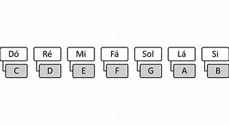
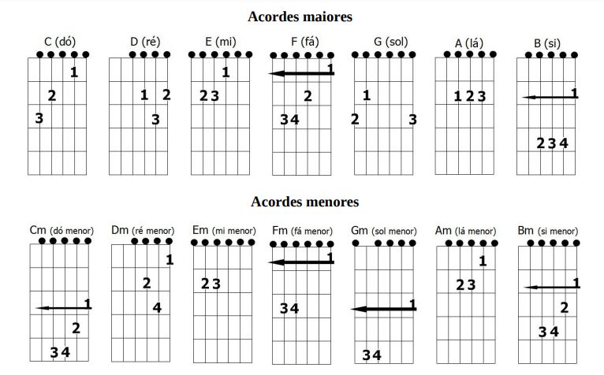
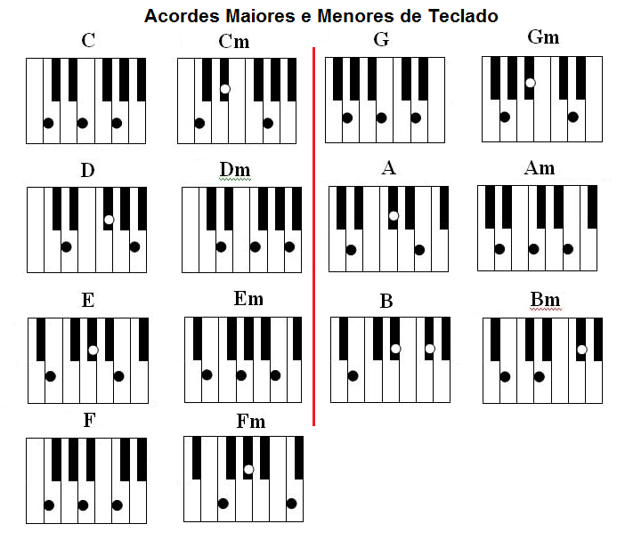

Afinal o que é Musica?
Musica é uma forma de arte que se constitui na combinação de vários sons e ritmos, seguindo uma pré-organização ao longo do tempo. A música divide-se em 3 partes: melodia, harmonia e ritmo.

Musica é uma forma de arte que se constitui na combinação de vários sons e ritmos, seguindo uma pré-organização ao longo do tempo. A música divide-se em 3 partes: melodia, harmonia e ritmo.
É a combinação sequencial de notas e silêncios dispostos no tempo de modo a formar um todo harmonioso. Uma melodia é aquilo que se canta ou o que faz no instrumento o solista. Um solo de guitarra é uma melodia, mas um acorde de guitarra não, este faz parte da harmonia.
HarmoniaÉ o campo que estuda as relações de encadeamento dos sons simultâneos (acordes). Tradicionalmente, obedece a uma série de normas que se originam nos processos composicionais efetivamente praticados pelos compositores da tradição europeia, entre o período do fim da Renascença ao fim do século XIX.
RitmoÉ a marcação do tempo de uma música. O ritmo consiste na estruturação da música em pulsações repetidas e sistematizadas dentro de um compasso. Tais pulsações (ou batidas) possuem uma determinada velocidade (ou tempo).

A teoria musical pode ser um pouco complicado a principio, porém vamos te ensinar de um jeito facil que te permitirá aprender facilmente.
Notas musicais são sinais que representam a altura do som musical. Apesar de serem inúmeros os sons empregados na música, para representá-los bastam apenas sete notas Maiores e sete notas menores.
As notas são utilizadas em escalas, as quais definem o tom da musica e as notas que serão usadas para o arranjo da musica.
O acorde é uma combinação de notas tocadas simultaneamente. Estas notas não são combinadas de forma aleatória, existe uma ordem e uma lógica para que elas soem em harmonia. A estrutura básica de um acorde é a tríade. Como o próprio nome sugere, tríade é uma combinação formada por 3 notas.
 Um instrumento musical é um objeto, construído com o propósito de produzir música. Os vários tipos de instrumentos podem ser classificados de diversas formas, sendo uma das mais comuns a divisão de acordo com a forma pela qual o som é produzido. O estudo dos instrumentos musicais designa-se por organologia. A data e a origem do primeiro aparelho considerado como instrumento musical é objeto de debates. Os arqueologistas tendem a debater este assunto referindo a validade de várias evidências como artefatos e trabalhos culturais.
Agora que você ja aprendeu como funciona a musica que tal testarmos na pratica?
Escolha um instrumento e comece a praticar!